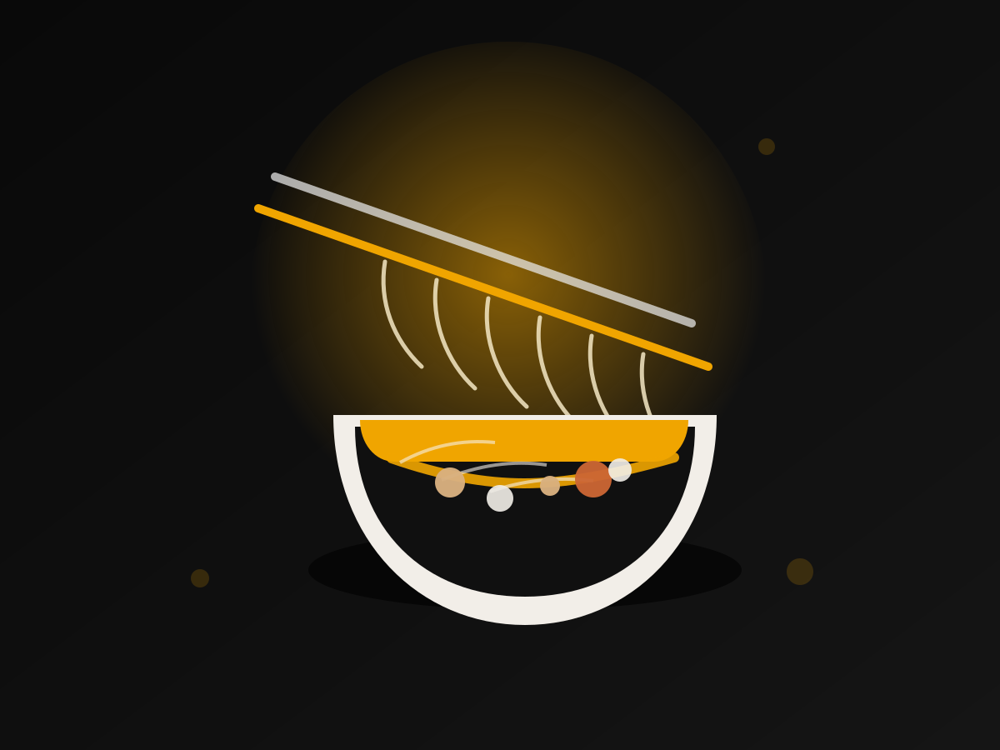

Built for the neighborhood, not the showroom
Kalye Ramen presents itself with a clear line: street roots, elevated Japanese flavors. The public story around the place is consistent too. Reviews mention fast service, friendly staff, plenty of seating, and bowls that land hot and generous without much waiting.
A public post tied to the restaurant describes an Overload Ramen built with fresh noodles made daily and broth cooked for about 16 hours. That tracks with the restaurant's larger impression: a ramen-first kitchen that values depth, speed, and regulars who know what they want.
That is why Kalye Ramen reads like a local favorite rather than a one-off stop. It feels tuned to Puerto Princesa's pace, with the comfort of a late lunch, a casual dinner, or a post-day-out craving that wants something filling and warm.
